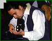
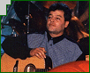
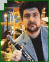
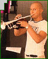
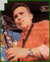

|

|
|
Евгени
Димитров-Маестрото - клавишни
Евгени
Димитров, или всеизвестният
Маестрото, е художественият
ръководител на Ку-Ку Бенд. Роден е на
20 януари 1959г. и е випусник на
музикалната гимназия в Плевен и
Държавната музикална академия, със
специалност класическо пиано. В
личен план е разведен, но си има
приятелка Радослава, и има
осемгодишен син - Венелин. Според
себе си е шеф по отговорност, не по
йерархия. Смята, че личните връзки в
екипа само пречат на работата и смята
подобни проявления като непристойни.
Все пак вижда себе си и колегите си
като примери за подражание. Харесва
всякакъв тип музика - класика, джаз,
рок, фолк, но любими са му филмовата и
етномузиката. Не смята за срамно това,
че пеят по частни партита, но отказва
да разкрие тарифата за наемане на Ку-Ку
Бенд. Мечтата му е да напише музика
към филм, който обаче обезателно
трябва да е български. До момента е
участвал в създаването на над 30
албума.Обича да се грижи за външния
си вид, но не обича да споделя факти
от личния си живот. Много амбициозен
и изцяло отдаден на професията си.
|
|
Георги
Милчев-Годжи - бас китара
Георги
Милчев-Годжи е може би вторият по
популярност в екипа на "Шоуто на
Слави Трифонов" след самия титуляр.
Всички знаят, че Годжи много обича
шефа, но не си спестява злобни
коментари и забележки по негов адрес.
Иначе Годжи е роден на 24 октомври 1969г.
Разведен е, с двама сина -
Цветомил и Волен. Заклет фен-левскар
е (още един повод за драки с шефа), но
има и артистични хобита - като киното
и изобразителното изкуство. Преди да
се присъедини към бенда е бил
търговец на железария, после е
рисувал и продавал картини, а
последното му занимание е било
изработката на рекламни и
аудиостопове в радио "Астра",
Плевен. В бенда идва по покана на
Маестрото, с когото и Слави са
приятели още от музикалното училище
в Плевен. Единственият музикант от Ку-Ку
Бенд до момента с издадени два
самостоятелни албума. По негови думи,
публиката
да се стяга за трети. По думите на
Слави, той е единствения без висше
музикално образование в бенда, но за
сметка на това е много талантлив. Без
него атмосферата на "Шоуто на
Слави Трифонов" може би нямаше да е
толкова чаровна.
|
|
Цветан
Недялков - китара
Цветан
Недялков е виртуоза на китарата в Ку-Ку
Бенд. Роден е в София, под знака на
Овена. Според една реплика на Слави в
шоуто, живее в квартал 'Банишора'.
Семейното му положение е категорично
- женен. Работил е съвместно с много
наши известни изпълнители и се
занимава със звукозаписна дейност.
Слави казва за него, че който наш
китарист го е чул как опъва жиците,
сериозно се е притеснил за
собствените си възможности. Според
колегите си от екипа,
той е най-самобитния музикант сред
тях. Обича импровизациите и не
пропуска възможност да
поимпровизира - било то в шоуто, или
по време на живо изпълнение. Без него,
струнните партии в изпълненията на
Ку-Ку Бенд никога нямаше да бъдат
същите.
|
|
Николай
Арабаджиев - китара
Николай
Абаджиев е вторият китарист в
състава на Ку-Ку Бенд. След
напускането на Герасим, в екипа се
появява Цветан Недялков. Шерифа е бил
канен да го замества няколко пъти и
така свири в бенда вече четири години.
Роден е през 1966г., женен и баща на две
деца. От ранна
детска възраст, шест години, започва
да свири на пиано. По-късно бива приет
в първия випуск класическа китара в
музикалното училище в София.
Завършил е естрадния отдел на
косерваторията, защото нямало клас
класическа китара. По време на
казармата е хорист в ГУСВ, а после още
около пет години свири в ансамбъла на
строителни войски. След това следва
период, когато работи в чужбина.
Докато не се стига до деня, в който
вече става пълноправен член на Ку-Ку
Бенд.
|
|
Илия
Илиев-Илийката - кларинет
Илия Илиев
е родом от Горна Оряховица, но е
випусник на русенската музикална
гимназия. Музикалната му биография е
завидна - завършва консерваторията,
после специализира майсторски клас,
минава през период на
преподавателска дейност и има 12
години стаж в Симфоничния оркестър
на БНР. Със Слави се запознават
като състуденти и колеги в оркестъра.
Двамата споделят едно общо желание -
да правят музика, която е специфична.
Дълго се борят, докато създадат свой
собствен стил. Критиките към тях са
просто опустошителни, обвиняват ги,
че опошлявали музиката. Но само
времето и публиката доказват, че все
пак са на прав път.
|
|
Йордан
Йончев-Гъмзата - тромпет
Йордан
Йончев е на 25 години и е зодия Водолей;
за съжаление на всички свои
почитателки си има приятелка. Родом е
от Видин и е завършил военно-музикално
училище. В бенда се появява както и
Николай Арабаждиев - за да замества.
Но този път Илия Илиев, който е бил на
турне в Испания през пролетта на 1997г.
Гъмзата свири около 20-ина дни в бенда
и след завръщането на Илийката
остава, защото всички го харесали и
решили, че той трябва да бъде част от
бенда. Сам признава, че живота му
много се е променил от момента, в
който е станал член на Ку-Ку Бенд.
Също така загатва, че двата му порока
са сладките неща и цигарите. Също
така се радва, че момичетата му
обръщат повече внимание, но не се
смята за звезда.
|
|
Евгени
Йотов - саксофон
Евгени
Йотов е саксофониста в Ку-Ку Бенд и
единия от двамата участници в него,
които са в състава му още от първия му
ден. Роден е в Русе и е завършил
русенската музикална гимназия.От
ученическите си години се познава с
Илийката. В консерваторията, където и
започва да свири на саксофон, се запознава със Слави.
Така след известно време на общо
познанство се ражда идеята за бенда.
Свирил е с много наши джаз формации и
както сам казва, никога не е мислил за
самостоятелна кариера. За него бенда
му е целия живот. Един път развеждан,
но отново семеен.
|
|
Венелин
Венков - ударни
Венелин
Венков е от Русе и е на 29 години. С Ку-Ку
Бенд е от 6 години. Има и дъщеричка,
Паулина, която е почти връстничка на
стажа му в бенда. Образованието му е
музикално - русенската музикална
гимназия и консерваторията с ударни
инструменти. Най-дългокосия сред
музикантите в екипа, но както сам
споделя, поддържа косата си както му
падне. Има много добро мнение за
феновете на Ку-Ку Бенд и смята, че неговата популярност и тази на бенда
съществува благодарение имено на тях.
Известен е по репликата "Венко, не
се смей". Може би са най-усмихнатите
и вечно смеещи се членове на бенда
заедно с Лили Йончева.
|
|
Лилия
Йончева - перкусии
Лили
Йончева е най-младият член на бенда
във всяко отношение - и като време на
пребиваване в състава, и като
житейски стаж. Тя е с Ку-Ку Бенд от 1999г.
и е само на 22 години. Родена е на 15
март 1979г. и е завършила СМУ "Любомир
Пипков", София. В момента е
студентка четвърта година в
Софийския университет, специалност
музика. Напоследък не й остава много
време за учене, защото шоуто й заема
почти цялото време. Чувства се в
студиото на предаването като у дома
си и се шегува, че се прибира вкъщи,
когато идва на работа. Попада в бенда
случайно, даже като че ли на шега.
Решава да се обади на Маестрото,
когато една вечер забелязва, че Калин
Вельов го няма сред бенда. Вземат я
веднага и още на същия ден участва в
записите на песента "Няма "не
искам". Казва, че е обожавала Ку-Ку
Бенд, но никога не си се е представяла
сред тях. Сега тя е вече "стопанката"
на бенда. Така я нарича за пръв път
Михаил Белчев, по време на
гостуването си в "Шоуто на Слави
Трифонов". А иначе тя е цветето или
просто момичето в групата, когато
Слави се обръща към бенда с думите
"момчета и момиче". Радва се, че
живота й се е развил така и си ляга
щастлива вечер.
|
| Александра
Раева - беквокали
Александра
Раева е родена в София под знака на
зодия Везни на 24 септември 1980 г.
Родителите й - Илия Раев и Наталия
Бардская са актьори. Сестра й, която е
с 12 години по-голяма от нея, е
завършила НАТФИЗ, но в момента не
работи на театралната сцена.
Александра е завършила цели две
средни образования - музикално
училище с пиано и оперно пеене и
техникум по текстил. В настоящия
момент е студентка трети курс в
Художествената академия,
специалност рекламен дизайн. За себе
си казва, че слуша всякаква музика,
защото "от всяка можеш да се
вдъхновиш, да научиш нещо".
Предпочита да се облича по младежки
елегантно и да сменя често парфюмите
си.
|
| Десислава
Добрева - беквокали
Десислава
Добрева е родена на 29 март 1981 г. Роден
град й е Варна. Под знака на Овена се е
появила на бял свят Десислава и сама
казва, че много й личи, защото е "суперинат".
Родителите й са инженери, има брат и
сестра също така. Завършила е средно
музикално училище с пиано. Сега е
студентка в Консерваторията,
едновременно две специалности - в
естрадния отдел с джазово пеене е
трети курс, а в теоритичния - втори.
Както Александра, Десислава обича да
слуша различна музика. Облича се така,
че да бъде интересна, но и с крак в
модата. По повод на ароматите казва,
че ги сменя често, защото всеки един
от тях и напомня за някакъв период от
живота й. |
|